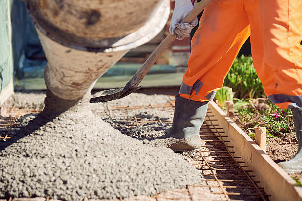
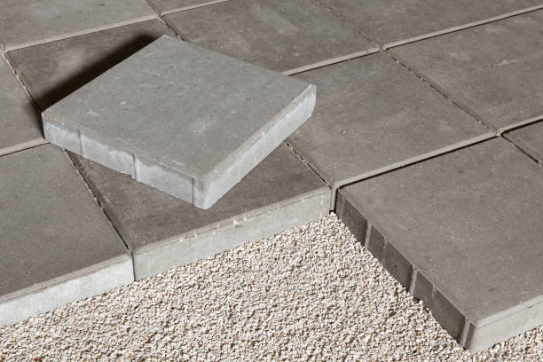

Midland Texas
info@hudsonconcretecontractors.xyz
Midland Texas
info@hudsonconcretecontractors.xyz

Leading concrete specialists in Midland Texas . From foundations to decorative finishes, our skilled team ensures superior quality and long-lasting results. Trust us for all your concrete projects.
Click Here To Call Us (877) 848-1711Looking for top-notch concrete services in Midland Texas ? Our concrete company stands as a leader in the industry, offering a full range of services designed to meet your residential and commercial needs. Whether you’re planning a new driveway, a custom patio, or need professional foundation work, we have the expertise and equipment to get the job done right.
We specialize in concrete installations, repairs, and maintenance, ensuring your project is built to last. Our team uses only the highest quality materials and the latest techniques to deliver durable, attractive, and cost-effective solutions. With years of experience serving the Midland Texas community, we pride ourselves on providing exceptional customer service and unmatched craftsmanship.
From decorative concrete to large-scale commercial projects, we handle it all with precision and care. Our licensed and insured professionals are committed to delivering results that exceed your expectations. We also offer free consultations to help you plan your project from start to finish.
Choose the best concrete company in Midland Texas for your next project. Contact us today to get started and see why we're the preferred choice for concrete services in Midland Texas .
Residential & commercial Concrete
Quality services at affordable prices
Immediate 24/ 7 emergency services


Cracks in concrete surfaces can be more than just an eyesore; they can also indicate underlying issues that need attention. At Hudson Concrete Contractors, serving Midland Texas we understand the common causes of concrete cracking and how to address them effectively.
Temperature Fluctuations
One of the most common reasons for concrete cracks is temperature changes. Concrete expands in the heat and contracts in the cold. Without proper expansion joints, these fluctuations can cause the surface to crack. Ensuring that your concrete is poured and cured under the right conditions helps mitigate this issue.
Poor Concrete Mix and Installation
The quality of the concrete mix and the installation process significantly impact the likelihood of cracking. An improper mix ratio, inadequate curing, or poor workmanship can weaken the concrete and lead to cracks. At Hudson Concrete Contractors, we use high-quality materials and adhere to industry best practices to ensure a durable finish.
Structural Overload
Concrete surfaces are designed to support specific loads. Overloading, whether from heavy vehicles or equipment, can put undue stress on the concrete and cause it to crack. Ensuring that your concrete is designed to handle the expected load is crucial for its longevity.
Settlement and Soil Movement
Uneven settling of the soil beneath the concrete can lead to cracking. Soil movement due to erosion, poor drainage, or other factors can cause the concrete slab to shift and crack. Proper site preparation and soil stabilization can prevent this issue.
Shrinkage Cracking
As concrete dries, it naturally shrinks. If the curing process is not managed correctly, this shrinkage can lead to surface cracks. Controlled curing methods and the use of joint fillers can help minimize shrinkage cracking.
For expert concrete solutions in Midland Texas trust Hudson Concrete Contractors to provide high-quality installations and repairs. Contact us today to learn more about preventing and addressing concrete cracks in your property!
Residential & commercial Concrete
Quality services at affordable prices
Immediate 24/ 7 emergency services
Finding trustworthy cement contractors near you can be challenging. Our team of certified cement contractors brings expertise and reliability right to your doorstep. We specialize in various cement applications, ensuring your projects are completed on time and within budget. With a focus on customer service and quality, we are committed to providing solutions that meet your specific needs while maintaining the highest standards of craftsmanship.

Budget constraints shouldn’t prevent you from getting quality concrete services. Our affordable concrete services provide you with high-quality solutions without breaking the bank. We offer a range of services tailored to fit your budget, whether you need a new driveway, patio, or concrete resurfacing. By choosing us, you ensure that you're getting the best value for your investment, with no compromise on quality or service.

Protecting your concrete surfaces is essential to extending their lifespan. Our concrete sealing services provide a protective barrier against moisture, stains, and damage. Our experienced technicians use high-quality sealants that enhance the durability and appearance of your concrete. Whether it’s for residential or commercial properties, we customize our sealing services to meet your specific needs. At Concrete, we understand the importance of maintaining your concrete, and we are here to offer expert advice and solutions for all your sealing needs.
Uneven concrete surfaces can pose safety risks and create aesthetic issues. Our concrete leveling services are the ideal solution for addressing sunken or displaced concrete slabs, including driveways, patios, and sidewalks. We utilize advanced techniques such as mudjacking and poly-jacking to raise and stabilize your concrete, restoring its level and function. Our expert team focuses on delivering quick and effective results, ensuring minimal disruption to your daily routine. Choose our concrete leveling services for a safer, more visually appealing solution to your uneven surfaces.

A solid foundation is the basis of any structure. Our concrete foundation installation services are designed to create a stable base for your home or business. We prioritize safety and quality, ensuring that every foundation we build will support your property for years to come. Our skilled team works closely with you to understand your project requirements and provides turnkey solutions tailored to your needs. Choose Concrete for reliable and sturdy foundation installations that stand the test of time.
Concrete staining is an excellent way to add color and style to your surfaces without compromising their strength. Our concrete staining services offer an array of color options and finishes, allowing you to customize your driveways, patios, and floors to match your aesthetic preferences. The staining process enhances the natural beauty of concrete while providing protection against wear and fading. Our experienced team utilizes top-quality stains and techniques to achieve stunning results that elevate the overall appearance of your property. Choose us to give your concrete surfaces a beautiful, lasting finish.

With so many concrete construction companies available, selecting the right partner for your project can be daunting. Our company in Midland Texas sets itself apart through our commitment to quality, customer service, and reliability. From residential projects to large commercial builds, we have the expertise to handle jobs of any size. Our experienced team utilizes the latest technology and practices to deliver outstanding results aligned with your specifications and deadlines.

Our ready mix concrete delivery services in Midland Texas provide a convenient solution for all your concrete needs. With a focus on punctuality and quality, we ensure that your concrete is mixed to perfection and delivered right when you need it. Our team is committed to maintaining the highest standards in concrete quality, guaranteeing that your projects flow seamlessly. By choosing us, you gain a reliable partner capable of meeting your demands efficiently and effectively.
Years Experience
Expert Technicians
Satisfied Clients
Compleate Projects
Why Choose Painting Vikmanic in Midland Texas ?
At Painting Vikmanic, we understand that choosing the right painting contractor in Midland Texas is crucial for achieving a beautiful and durable finish. With years of experience in the industry, we are committed to delivering exceptional results for both residential and commercial projects. Here’s why Painting Vikmanic is the top choice for your painting needs.
Unmatched Expertise and Quality
Our team of professional painters brings unparalleled expertise to every project. We use high-quality materials and advanced techniques to ensure a flawless finish that stands the test of time. Whether you're looking to refresh your home’s interior or enhance your business's exterior, our attention to detail and commitment to excellence set us apart.
Customized Solutions for Every Project
At Painting Vikmanic, we believe in providing tailored solutions to meet your unique needs. From selecting the perfect color palette to offering expert advice on finishes, we work closely with you to bring your vision to life. Our goal is to ensure your complete satisfaction with every brushstroke.
Reliable and Timely Service
We value your time and strive to complete every project on schedule. Our team is known for its reliability and efficiency, ensuring minimal disruption to your daily life. We adhere to strict deadlines and communicate transparently throughout the process.
Competitive Pricing and Free Estimates
We offer competitive pricing without compromising on quality. At Painting Vikmanic, we provide free, no-obligation estimates so you can make an informed decision. Our commitment to affordability and excellence makes us the ideal choice for your painting needs in Midland Texas .
Choose Painting Vikmanic for your next project and experience the difference that true professionalism and dedication can make. Contact us today for your free estimate and let’s transform your space together!
When it comes to finding reliable and professional concrete contractors near you, it's essential to choose experts who understand the local landscape, climate, and building codes. Our team of skilled concrete contractors provides top-notch services tailored to meet your unique needs. With years of experience in the industry, we guarantee high-quality workmanship and attention to detail in every project. Whether it's a simple repair or a complete installation, we handle it all with precision and care.
In today's world, ensuring your residential concrete projects are handled by professionals is crucial. Our residential concrete services in Midland Texas include everything from driveways and patios to foundations and decorative elements. We pride ourselves on using high-grade materials and the latest techniques to ensure durability and aesthetic appeal. By choosing us, you benefit from our commitment to excellence, timely project completion, and competitive pricing, ensuring that your home's concrete enhancements not only meet but exceed your expectations.
In the heart of any thriving business lies a commitment to quality and reliability. Our commercial concrete contractors in Midland Texas specialize in large-scale projects that require careful planning and execution. From retail spaces to office buildings, we provide a comprehensive range of services, including concrete pouring, foundation installation, and decorative concrete finishes. With a focus on understanding the unique requirements of your business, we ensure minimal disruption while delivering results that enhance your business's functionality and appeal.
A driveway is often the first impression visitors have of your home, which is why our concrete driveway installation services in Midland Texas are designed with aesthetics and durability in mind. A professionally installed concrete driveway not only enhances curb appeal but also offers a long-lasting solution that withstands the test of time. Our team uses high-quality materials and advanced techniques to provide a flawless finish. Additionally, we ensure timely completion, minimal disruption, and excellent customer service, making us the best choice for your driveway needs.
A well-designed concrete patio can transform your outdoor space into a functional and aesthetically pleasing area for relaxation and entertainment. Our concrete patio installation services are tailored to create the perfect outdoor living space that matches your style and needs. From simple designs to elaborate features, our skilled contractors work closely with you to bring your ideas to life. We understand the importance of quality, which is why we only use high-quality materials and adhere to best practices for installation. Choose us for an expertly crafted concrete patio that you and your family will enjoy for years to come.
Stamped concrete offers a unique and stylish alternative to traditional concrete surfaces. Our stamped concrete services provide the opportunity to achieve the look of high-end materials like stone or brick at a fraction of the cost. Our skilled artisans use advanced techniques to create stunning patterns and designs that will elevate your residential or commercial property. Whether for driveways, patios, or walkways, our stamped concrete not only adds visual appeal but also durability, making it a smart investment. Experience the beauty of stamped concrete today by choosing Concrete.
A strong foundation is crucial for any structure. If you're noticing signs of foundation issues, you need reliable concrete foundation repair services. Our experts in Midland Texas will evaluate your foundation and recommend the best solutions to restore its stability. We employ the latest techniques and technologies to ensure effective repairs that stand the test of time. At Concrete, we understand the complexities of foundation repair and are dedicated to providing top-notch service and support every step of the way. Invest in your property with our trusted foundation repair solutions.
Our concrete slab installation services are designed to provide a reliable base for your construction projects, whether it’s for homes, garages, or commercial buildings. With our focus on meticulous preparation and quality materials, we guarantee a durable slab that stands up to heavy loads and environmental conditions. Our experienced team will work with you throughout the entire process to ensure the installation meets your specifications, providing a cost-effective solution without sacrificing quality.
Transform your outdoor or indoor space with our decorative concrete services that are as beautiful as they are functional. From stamped and stained concrete to overlays and custom designs, we have the creative solutions to enhance your property in Midland Texas . Our skilled team combines artistry with technical expertise to execute designs that match your style and vision. Whether it’s for patios, walkways, or flooring, our decorative services add a unique touch to any project. Choose Concrete and elevate your spaces with our stunning decorative concrete options.
If your existing concrete surfaces are showing signs of wear and tear, our concrete resurfacing services can restore their beauty and functionality without the need for complete replacement. Our process involves applying a new layer of concrete over your existing surface, resulting in a fresh, durable finish. Ideal for driveways, patios, and pool decks, resurfacing is an affordable way to enhance your property's appeal. With our expertise, we ensure that your resurfaced area will look as good as new.
When your concrete surfaces suffer damage, you need expert concrete repair contractors that you can trust. At Concrete, our team specializes in identifying and repairing cracks, chips, and other issues to restore your concrete to its original condition. We utilize high-quality materials and proven methods to ensure effective repairs that last. Our focus on customer satisfaction and attention to detail makes us the ideal choice for concrete repairs. Let us help you protect your investment with our comprehensive repair services.
Sidewalks play a vital role in accessibility and safety in your community. Our sidewalk concrete repair services in Midland Texas ensure that your sidewalks remain smooth, safe, and visually appealing. We specialize in repairing cracks, lifting uneven slabs, and restoring surfaces to their original condition. Our team is dedicated to providing quick, efficient service, minimizing disruption to foot traffic while we work. With our expertise, your sidewalks will be restored to a safe and welcoming condition. Choose our sidewalk repair services to maintain a safe walking environment for your family and community.
Concrete floors offer unmatched durability and versatility for both residential and commercial venues. Our concrete floor installation services are designed to provide you with a strong, long-lasting surface that can withstand heavy use while looking aesthetically pleasing. We specialize in a variety of finishes and styles, including polished concrete, stained floors, and more, allowing you to customize the look to fit your space. Our skilled team ensures a professional installation process that covers everything from preparation to finishing touches. Trust us for high-quality concrete flooring that enhances your property’s appeal and functionality.
Sometimes, the first step in a successful concrete project is removal. Our concrete removal services provide efficient and safe solutions for getting rid of unwanted concrete structures. Our team is equipped with the necessary tools and expertise to handle both small and large removal jobs. We take care to minimize disruption to your property and offer timely completion, making us the go-to choice for your concrete removal needs.
Finding a reliable local concrete company can make all the difference in your construction projects. At Concrete, we pride ourselves on being a trusted choice among local concrete companies . Our commitment to quality, affordability, and customer service has made us a preferred contractor for all concrete services. We are deeply rooted in the community and dedicated to providing top-notch services tailored to meet the specific needs of our clients. Partner with us for your next concrete project, and experience the local difference.
Choosing the best concrete contractors is crucial for the success of your project. At Concrete, we are proud to be recognized as the best for our exceptional workmanship, attention to detail, and customer-first approach. Our team consists of skilled professionals who are passionate about delivering high-quality concrete solutions tailored to your needs. We employ the latest techniques and equipment to ensure every project is executed flawlessly, from start to finish. Experience the excellence that comes with choosing the best in the business.
Proper concrete pouring is vital for the longevity and durability of any concrete structure. Our concrete pouring services in Midland Texas are executed with precision and care to ensure the best results. We specialize in various applications, including foundations, slabs, and more, using high-quality concrete and advanced techniques for flawless execution. Our experienced workforce understands the importance of correct pouring to prevent cracking and deterioration, and we are committed to delivering superior quality in every job. Let Concrete handle your pours for a result that you can trust.
Ensuring the longevity and durability of concrete surfaces in Midland Texas requires understanding the factors that impact their lifespan. At Hudson Concrete Contractors, we’re committed to delivering high-quality concrete solutions by addressing these key factors.
Quality of Materials
The durability of concrete starts with the quality of the materials used. High-quality cement, aggregates, and water are essential for a strong and long-lasting concrete mix. Using subpar materials can lead to weak concrete that deteriorates more quickly.
Proper Mixing and Application
The mixing ratio and application process significantly affect concrete durability. Accurate measurements and thorough mixing ensure the concrete achieves the desired strength and resistance. Additionally, proper application techniques, such as correct placement and finishing, are crucial for a smooth and resilient surface.
Curing Conditions
Curing is a critical phase in the concrete setting process. Adequate curing time and conditions help the concrete reach its full strength and durability. Rapid drying or improper curing can lead to surface cracks and weakened structural integrity.
Environmental Factors
Environmental conditions play a significant role in the lifespan of concrete. Extreme temperatures, moisture levels, and exposure to chemicals can impact concrete’s performance. Implementing protective measures, such as sealers and appropriate reinforcement, helps mitigate these environmental effects.
Load and Stress Management
Properly managing the load and stress placed on concrete is essential for its durability. Overloading or uneven stress can cause cracks and structural issues. Ensuring that concrete is designed and reinforced to handle expected loads prevents premature damage.
Maintenance Practices
Regular maintenance, including cleaning and sealing, helps protect concrete surfaces from damage and extends their lifespan. Addressing minor issues promptly can prevent them from developing into major problems.
For expert advice and high-quality concrete services in Midland Texas Hudson Concrete Contractors is your trusted partner. Contact us today to ensure your concrete surfaces are built to last and maintain their durability for years to come.
Midland is a city in and the county seat of Midland County, Texas, United States. A small part of Midland is in Martin County.
The cost of concrete work depends on the project's size and complexity. Hudson Concrete Contractors offers competitive pricing and free estimates .
Concrete typically takes around 28 days to fully cure, but it can be walked on within 24-48 hours. Hudson Concrete Contractors advises waiting longer for heavy loads.
Yes, we provide concrete leveling and repair services in Midland Texas to fix uneven or sunken surfaces.
Concrete is low-maintenance but sealing every few years and occasional cleaning can help prolong its life. Hudson Concrete Contractors provides maintenance tips in Midland Texas .
Yes, we offer durable concrete retaining wall construction in Midland Texas for both residential and commercial properties.
Yes, we provide professional concrete repair services in Midland Texas to fix cracks, spalling, and other damage.
Yes, Hudson Concrete Contractors provides expert concrete foundation installation for homes and commercial buildings .
Yes, we offer custom concrete design services, including decorative, stamped, and colored options to match your vision .
Cement is a key ingredient in concrete. Concrete is a mixture of cement, sand, gravel, and water. Hudson Concrete Contractors uses high-quality concrete for all projects in Midland Texas .
Proper site preparation, including grading and leveling, is crucial. Hudson Concrete Contractors handles all prep work to ensure a smooth, durable installation .
Yes, we use steel reinforcement (rebar or mesh) in concrete installations to increase strength and durability in Midland Texas .
Yes, we use special techniques and additives to pour concrete in cold weather conditions in Midland Texas ensuring proper curing.
Yes, we offer concrete demolition and removal services for old or damaged concrete .
Yes, we specialize in stamped concrete services in Midland Texas offering decorative options to mimic stone, brick, or tile.
We recommend waiting at least 7 days before driving on a new concrete driveway installed by Hudson Concrete Contractors .
Hudson Concrete Contractors provides a range of services including driveways, patios, foundations, sidewalks, and decorative concrete installations.
Yes, we offer a variety of colored concrete options to enhance the appearance of your patios, driveways, or walkways .
Yes, we offer concrete resurfacing services to restore old, worn-out surfaces and make them look brand new.
The time frame depends on the project size, but most concrete projects by Hudson Concrete Contractors are completed within 3-7 days .
Yes, we provide concrete sidewalk installation and repair services for residential and commercial properties in Midland Texas .
Concrete is a sustainable material, especially when recycled. Hudson Concrete Contractors follows environmentally friendly practices .
Yes, Hudson Concrete Contractors provides residential concrete services such as driveway, patio, and walkway installations in Midland Texas .
The best time to pour concrete is during mild weather conditions, typically in spring or fall, but we can work year-round.
Absolutely. Hudson Concrete Contractors has extensive experience managing large-scale commercial concrete projects in Midland Texas .
Hudson Concrete Contractors recommends high-strength, durable concrete mixes designed for heavy traffic and weather resistance for driveways in Midland Texas .
A properly installed concrete driveway by Hudson Concrete Contractors can last up to 30 years with proper maintenance .
Yes, Hudson Concrete Contractors offers free, no-obligation estimates for all concrete projects .
Yes, Hudson Concrete Contractors has the expertise and equipment to manage large commercial and residential concrete projects .
Concrete is an excellent option for patios in Midland Texas due to its durability, low maintenance, and customization options for color and texture.
Yes, Hudson Concrete Contractors is fully licensed and insured to provide professional and safe concrete services .
The concrete slab installation by Hudson Concrete Contractors in Midland Texas was flawless. Their team was skilled and completed the project on time. We’re thrilled with the results! — Paul C.
Profession
The new concrete walkway installed by Hudson Concrete Contractors in Midland Texas is perfect. Their team was professional, on-time, and the work was completed to the highest standard. Highly recommended! — Brian L.
Profession
Hudson Concrete Contractors provided top-quality service for our concrete foundation in Midland Texas . Their professionalism and craftsmanship were impressive. The foundation is solid, and we’re grateful for their expertise! — Mark H.
Profession
Midland TX Concrete Pros
(877) 848-1711
info@hudsonconcretecontractors.xyz
09.00 AM - 09.00 PM
09.00 AM - 12.00 PM